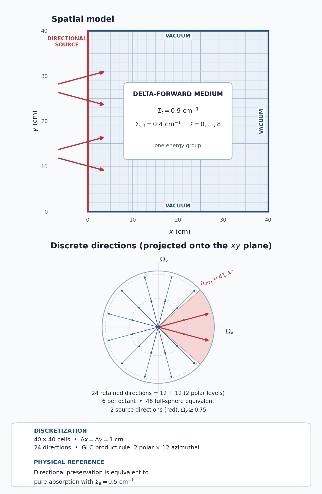
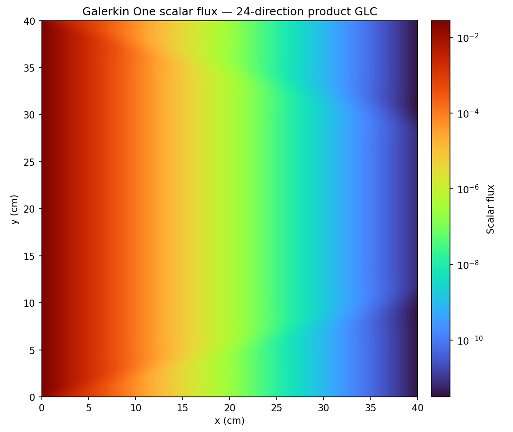

5.1.3. Anisotropic Boundary Sources with Delta-Forward Scattering

Problem geometry, boundary conditions, and the 24-direction GLC product rule. The angular panel projects the retained directions (two positive polar levels with 12 azimuthal directions each) onto the :math:`xy` plane. Two retained ordinates, at azimuths of :math:`pm15^circ`, satisfy :math:`Omega_xgeq0.75` and carry the boundary source; the other three boundaries are vacuum. The arrows along the left side of the spatial panel show these two source directions at representative points.
This tutorial applies the delta-forward scattering model to a 40 cm by 40 cm, one-group problem driven by a directional boundary source. It compares Standard P3, Standard P4, Standard P5, Standard P6, Standard P7, Galerkin One, and Galerkin Three angular operators against an equivalent pure-absorber reference.
[ ]:
from pathlib import Path
from mpi4py import MPI
from pyopensn.aquad import GLCProductQuadrature2DXY
from pyopensn.context import Finalize, UseColor
from pyopensn.math import AngularFluxFunction
from pyopensn.mesh import OrthogonalMeshGenerator
from pyopensn.post import VolumePostprocessor
from pyopensn.solver import DiscreteOrdinatesProblem, SteadyStateSourceSolver
from pyopensn.xs import MultiGroupXS
UseColor(False)
comm = MPI.COMM_WORLD
rank = comm.rank
5.1.3.1. Define the transport problem
Why P8. The 24-direction quadrature supports at most 24 independent moments, one per direction. The P6 set has 28 harmonics. However, only a subset of these harmonics can be used. The P7 set contains 36 moments yet it does not have 24 usable moments. The P8 set has 45 moments and is the first set to provide 24 usable moments thus a P8 expansion is what we want for the number of moments to be equal to the number of directions. Maximum accuracy is achieved when the number of moments is equal to the number of directions unless the cross section expansion converges at a number of moments less than the number of directions. In this case, one can still use the number of moments equal to the number of directions but the accuracy will be no higher than using a converged harmonic expansion with fewer moments.
The square contains one material with \(\Sigma_t=0.9\) \(\text{cm}^{-1}\) and \(\Sigma_{s,\ell}=0.4\) \(\text{cm}^{-1}\) for every retained moment. Equal scattering moments represent the delta-forward kernel, for which scattering preserves direction. For such a kernel, particles scatter back in the direction from which they outscatter. Which is the same as no scattering at all. Because it is a delta function kernel a Legendre expansion never converges. Nonetheless, a property of all Galerkin quadrature methods is that, if the number of directions is equal to the number of moments, the delta forward kernel is exact.
It is therefore equivalent to a pure absorber with \(\Sigma_a=\Sigma_t-\Sigma_s=0.5\) \(\text{cm}^{-1}\). We solve that pure-absorber problem as the reference. The scattering ratio \(\Sigma_s/\Sigma_t\approx0.44\) is low enough for every Standard order to converge. If one uses the Standard quadrature treatment instead of the Galerkin treatment, it is possible for the source iteration process to diverge. For example, Standard P8 on this problem diverges under source iteration, and the GMRES solve used here stalls without converging.
All solves use the same 24-direction product quadrature: n_polar=4 defines four full-range Gauss-Legendre nodes, of which the two positive-\(z\) levels are retained in XY geometry, and n_azimuthal=12 places 12 directions on each retained level. The Standard case retain moments through \(L=3\) to \(L=7\).
[ ]:
domain_length = 40.0
num_cells = 40
sigma_t = 0.9
sigma_s = 0.4
sigma_a = sigma_t - sigma_s
maximum_order = 8
mu_cutoff = 0.75
nodes = [domain_length * i / num_cells for i in range(num_cells + 1)]
mesh = OrthogonalMeshGenerator(node_sets=[nodes, nodes]).Execute()
mesh.SetUniformBlockID(0)
mesh.SetOrthogonalBoundaries()
xs_filename = Path("anisotropic_boundary_delta_forward.xs")
if rank == 0:
with xs_filename.open("w") as stream:
stream.write("NUM_GROUPS 1\n")
stream.write(f"NUM_MOMENTS {maximum_order + 1}\n\n")
stream.write("SIGMA_T_BEGIN\n")
stream.write(f"0 {sigma_t}\n")
stream.write("SIGMA_T_END\n\n")
stream.write("TRANSFER_MOMENTS_BEGIN\n")
for ell in range(maximum_order + 1):
stream.write(f"M_GFROM_GTO_VAL {ell} 0 0 {sigma_s}\n")
stream.write("TRANSFER_MOMENTS_END\n")
comm.Barrier()
5.1.3.2. Select and normalize the boundary directions
On the left boundary, \(\mu=\boldsymbol\Omega\cdot\hat{\mathbf x}=\Omega_x\). The arbitrary boundary source is nonzero only for ordinates satisfying \(\mu\geq0.75\), corresponding to a cone about the inward \(+x\) normal. Its angular-flux magnitude is normalized with the discrete weights so that
per unit depth. The other three boundaries are vacuum.
[ ]:
boundary_quadrature = GLCProductQuadrature2DXY(
n_polar=4, n_azimuthal=12, scattering_order=maximum_order
)
selected_directions = {
index
for index, omega in enumerate(boundary_quadrature.omegas)
if omega.x >= mu_cutoff
}
if not selected_directions:
raise RuntimeError("The quadrature has no directions with mu >= 0.75.")
incoming_current = sum(
boundary_quadrature.weights[index]
* boundary_quadrature.omegas[index].x
for index in selected_directions
)
boundary_strength = 1.0 / (domain_length * incoming_current)
source_rate = domain_length * boundary_strength * incoming_current
def boundary_flux(group_index, direction_index):
if group_index == 0 and direction_index in selected_directions:
return boundary_strength
return 0.0
xmin_boundary = AngularFluxFunction(boundary_flux)
if rank == 0:
print(f"QUADRATURE_DIRECTION_COUNT={len(boundary_quadrature.omegas)}")
print(f"BOUNDARY_DIRECTION_COUNT={len(selected_directions)}")
print(f"BOUNDARY_SOURCE_RATE={source_rate:.12e}")
5.1.3.3. Solve the reference and operator cases
We first solve the equivalent pure-absorber problem. We then use the delta-forward cross sections with Standard P3, Standard P4, Standard P5, Standard P6, Standard P7, Galerkin One, and Galerkin Three operators. All eight calculations use the same mesh, directions, boundary source, and solver settings, so their errors are measured against a meaningful physical reference.
[ ]:
def solve(
operator_method, use_delta_forward=True, scattering_order=maximum_order
):
cross_sections = MultiGroupXS()
if use_delta_forward:
cross_sections.LoadFromOpenSn(str(xs_filename))
else:
cross_sections.CreateSimpleOneGroup(sigma_t=sigma_a, c=0.0)
quadrature = GLCProductQuadrature2DXY(
n_polar=4,
n_azimuthal=12,
scattering_order=scattering_order if use_delta_forward else 0,
operator_method=operator_method,
)
groupset = {
"groups_from_to": (0, 0),
"angular_quadrature": quadrature,
"inner_linear_method": "petsc_gmres",
"l_abs_tol": 1.0e-10,
"l_max_its": 200,
"gmres_restart_interval": 30,
}
problem = DiscreteOrdinatesProblem(
mesh=mesh,
num_groups=1,
groupsets=[groupset],
xs_map=[{"block_ids": [0], "xs": cross_sections}],
boundary_conditions=[
{"name": "xmin", "type": "arbitrary",
"function": xmin_boundary},
{"name": "xmax", "type": "vacuum"},
{"name": "ymin", "type": "vacuum"},
{"name": "ymax", "type": "vacuum"},
],
options={"verbose_inner_iterations": False},
)
solver = SteadyStateSourceSolver(problem=problem)
solver.Initialize()
solver.Execute()
total_flux = VolumePostprocessor(problem=problem, value_type="integral")
total_flux.Execute()
return float(total_flux.GetValue()[0][0]), problem
[ ]:
reference_flux, _ = solve("standard", use_delta_forward=False)
standard_p3_flux, _ = solve("standard", scattering_order=3)
standard_p4_flux, _ = solve("standard", scattering_order=4)
standard_p5_flux, _ = solve("standard", scattering_order=5)
standard_flux, _ = solve("standard", scattering_order=6)
standard_p7_flux, _ = solve("standard", scattering_order=7)
galerkin_one_flux, galerkin_one_problem = solve("galerkin_one")
galerkin_three_flux, _ = solve("galerkin_three")
standard_p3_relative_error = (
abs(standard_p3_flux - reference_flux) / reference_flux
)
standard_p4_relative_error = (
abs(standard_p4_flux - reference_flux) / reference_flux
)
standard_p5_relative_error = (
abs(standard_p5_flux - reference_flux) / reference_flux
)
standard_relative_error = abs(standard_flux - reference_flux) / reference_flux
standard_p7_relative_error = (
abs(standard_p7_flux - reference_flux) / reference_flux
)
galerkin_one_relative_error = (
abs(galerkin_one_flux - reference_flux) / reference_flux
)
galerkin_three_relative_error = (
abs(galerkin_three_flux - reference_flux) / reference_flux
)
if rank == 0:
print(f"PURE_ABSORBER_TOTAL_FLUX={reference_flux:.12e}")
print(f"STANDARD_P3_TOTAL_FLUX={standard_p3_flux:.12e}")
print(f"STANDARD_P4_TOTAL_FLUX={standard_p4_flux:.12e}")
print(f"STANDARD_P5_TOTAL_FLUX={standard_p5_flux:.12e}")
print(f"STANDARD_TOTAL_FLUX={standard_flux:.12e}")
print(f"STANDARD_P7_TOTAL_FLUX={standard_p7_flux:.12e}")
print(f"GALERKIN_ONE_TOTAL_FLUX={galerkin_one_flux:.12e}")
print(f"GALERKIN_THREE_TOTAL_FLUX={galerkin_three_flux:.12e}")
print(f"STANDARD_P3_RELATIVE_ERROR={standard_p3_relative_error:.12e}")
print(f"STANDARD_P4_RELATIVE_ERROR={standard_p4_relative_error:.12e}")
print(f"STANDARD_P5_RELATIVE_ERROR={standard_p5_relative_error:.12e}")
print(f"STANDARD_RELATIVE_ERROR={standard_relative_error:.12e}")
print(f"STANDARD_P7_RELATIVE_ERROR={standard_p7_relative_error:.12e}")
print(f"GALERKIN_ONE_RELATIVE_ERROR={galerkin_one_relative_error:.12e}")
print(f"GALERKIN_THREE_RELATIVE_ERROR={galerkin_three_relative_error:.12e}")
5.1.3.4. Interpret the result
The reported response is the domain-integrated scalar flux, \(\int_V\phi(\mathbf r)\,dV\), per unit depth. A separate balance audit uses
where \(P\), \(I\), \(A\), and \(O\) are the total production, boundary inflow, absorption, and boundary outflow rates.
Case |
Domain-integrated flux |
Relative error |
Balance residual |
|---|---|---|---|
Pure-absorber reference |
1.975659820924 |
– |
\(4.47\times10^{-15}\) |
Standard P3 |
1.953584134742 |
\(1.12\times10^{-2}\) |
\(3.47\times10^{-11}\) |
Standard P4 |
1.969541851972 |
\(3.10\times10^{-3}\) |
\(3.66\times10^{-11}\) |
Standard P5 |
1.960621330261 |
\(7.61\times10^{-3}\) |
\(2.19\times10^{-12}\) |
Standard P6 |
1.858412607360 |
\(5.93\times10^{-2}\) |
\(1.63\times10^{-12}\) |
Standard P7 |
2.194920679821 |
\(1.11\times10^{-1}\) |
\(1.56\times10^{-12}\) |
Galerkin One |
1.975659820861 |
\(3.20\times10^{-11}\) |
\(3.90\times10^{-11}\) |
Galerkin Three |
1.975659820861 |
\(3.21\times10^{-11}\) |
\(3.91\times10^{-11}\) |
Every case converged to a GMRES residual below \(10^{-10}\).
5.1.3.4.1. Why the operator construction changes the answer
Let \(D\) map the 24 directional fluxes to moments and let \(M\) map moments back to directions. The discrete scattering source is
Every retained delta-forward moment equals \(\Sigma_s\), so \(q_s=\Sigma_s MD\psi=\Sigma_s \psi\). Therefore, the inscatter source exactly cancels the outscatter source.
In general, Galerkin quadrature methods guarantee particle conservation. The Standard method will only give conservation if the order of the harmonic expansion is sufficiently low relative to the order of the quadrature set. Conservation requires that the quadrature integrates the retained harmonics exactly, that is, \(\sum_n w_nY_{\ell m}(\boldsymbol\Omega_n)=0\) for every \((\ell,m)\neq(0,0)\).
When the quadrature integrates every retained harmonic exactly, as it does here, the scattering source conserves particles: every operator balances to solver precision, but only the Galerkin operators, which enforce \(MD=I_{24}\), also reproduce the reference flux. Standard P5 retains 21 moments, fewer than the 24 directions; only Standard P6 and P7, with 28 and 36 moments, retain more moments than there are directions. Regardless of the moment count, none of the Standard operators satisfies \(MD=I_{24}\) on this quadrature, so their errors need not decrease with expansion order: Standard P5, P6, and P7 all have larger errors than Standard P4, but conservation is maintained.
5.1.3.5. Export and visualize the scalar flux
The Galerkin One result is used as the representative scalar-flux field. The following code was run once to export it. It remains in Markdown so regression tests do not recreate the VTK files.
from pyopensn.fieldfunc import FieldFunctionGridBased
scalar_flux = galerkin_one_problem.GetScalarFluxFieldFunction()[0]
FieldFunctionGridBased.ExportMultipleToPVTU(
[scalar_flux], "Flux/AnisotropicBoundaryGalerkinOne"
)

Galerkin One scalar flux using 24 retained upper-hemisphere ordinates. Each 1 cm cell is drawn with its piecewise-linear discontinuous (PWLD) solution, the bilinear field defined by the cell’s four nodal values, and the logarithmic color scale spans the full computed range, from about :math:`3times10^{-12}` to :math:`3times10^{-2}`. The field agrees with the absorber reference because :math:`D=M^{-1}` preserves the 24-direction space to numerical precision.
[ ]:
if rank == 0:
xs_filename.unlink(missing_ok=True)
5.1.3.6. Finalize (for Jupyter Notebook only)
In script mode, PyOpenSn handles finalization automatically. In a Jupyter kernel, finalize OpenSn before MPI.
[ ]:
if "opensn_console" not in globals():
from IPython import get_ipython
if get_ipython() is not None:
Finalize()
MPI.Finalize()